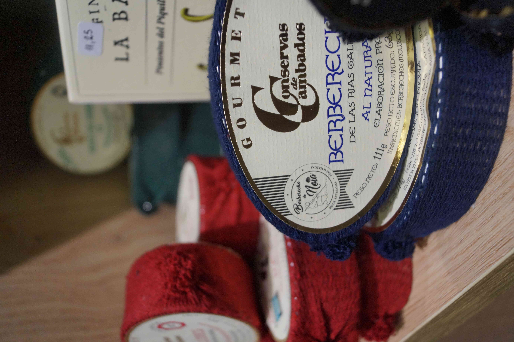

Donde la Excelencia Gourmet y el Café de Especialidad se Fusionan

Forest Coffee
Productos Gourmet

Complementos

Catas y Experiencias
En Sabor Maestro trabajamos con Forest Coffee, una microtostadora de especialidad en Vigo donde el café se tuesta de forma artesanal por el mismo barista que te lo sirve. Sebarista y su equipo —profesionales del café con más de 10 años de experiencia y premios nacionales— seleccionan cada producto gourmet para que vivas una experiencia auténtica: cafés únicos, vinos singulares, chocolates, tés y mucho más.
Local increíble para poder tomarse un buen café para llevar. Incluso puedes comprar el mismo café para hacértelo en casa que te lo muelen en el momento. Además de un excelente asesoramiento en materia de café o de vino, es un servicio maravilloso y los que te atienden son increíblemente amables y profesionales! Encantada con el servicio! Gracias!
Los mejores cafés y muy buena variedad de vinos, un servicio profesional y agradable, buen trato com el cliente y cercanía, recomiendo al 100%
Lugar super ameno, de gran belleza estética y con unos productos exclusivos: delicatessen, café de especialidad, molido en el acto. Puedes escoger tu vino, guiado magistralmente por Sebastián, prestigioso sommelier y reconocido barista. Ideal para una copa o un café delicioso take away!!
Muy buen café natural, recomendado!se siente la diferencia en el tostado y el sabor.
El mejor lugar para llevarte un café de especialidad. Se ha convertido en mi tienda habitual.
🕒 Lunes a Viernes:8:30 - 14:00 | 17:00 - 20:30
🕒 Sábados:9:30 - 14:00 | 17:30 - 20:30
📍 Rúa do Marqués de Valladares, 3, 36201 Vigo, Pontevedra
📞986 173 031